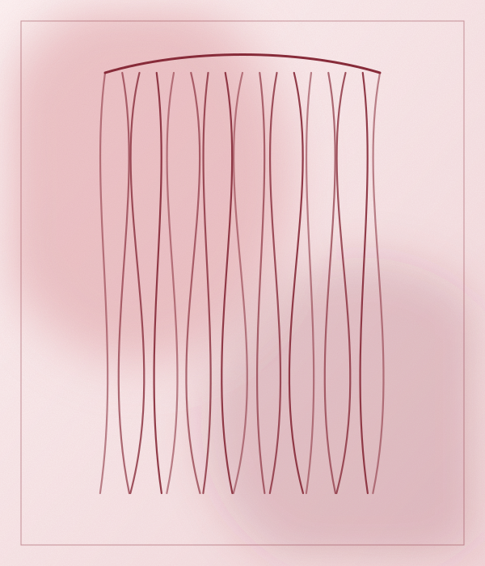
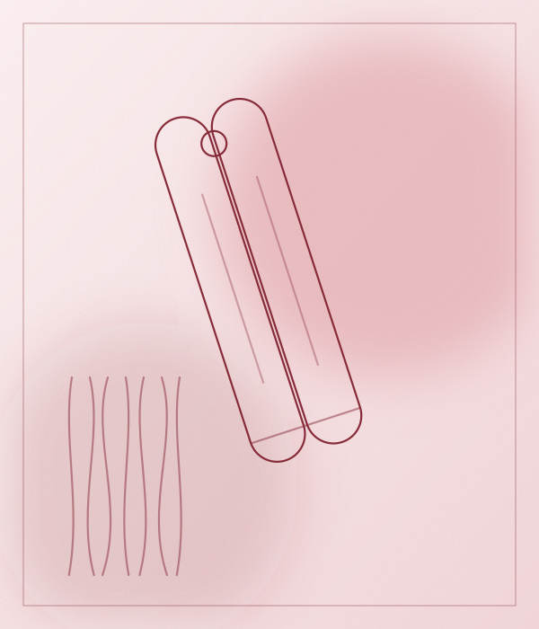
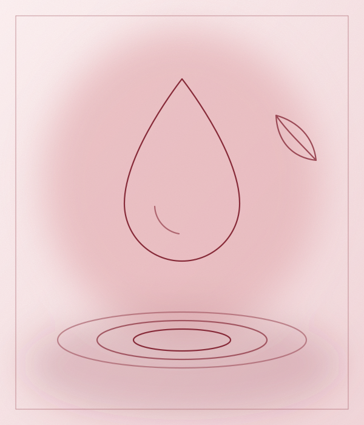
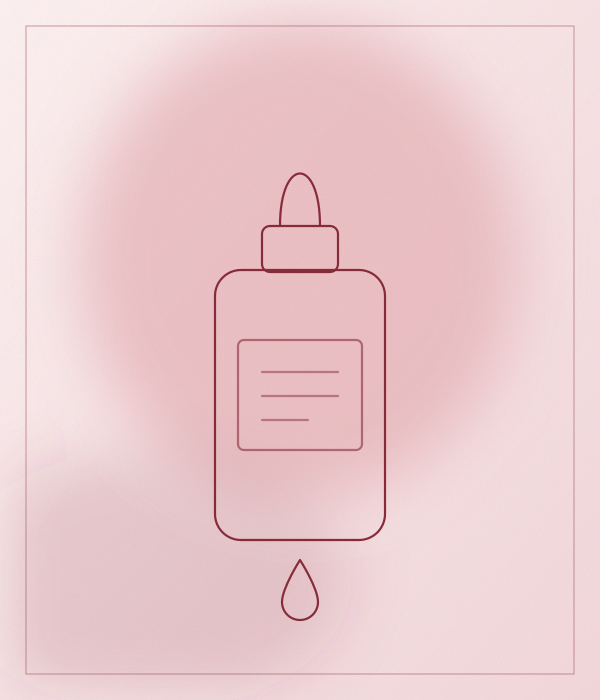
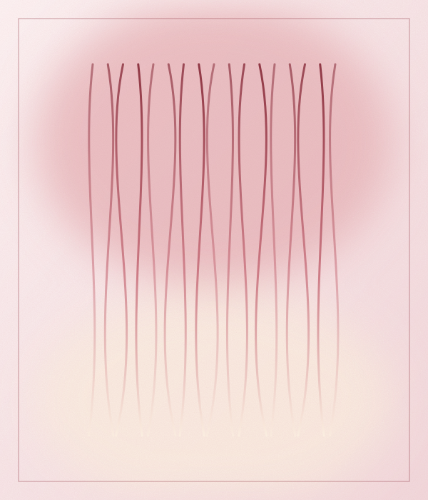
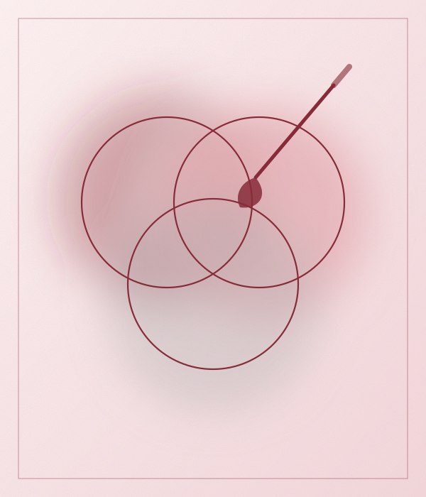
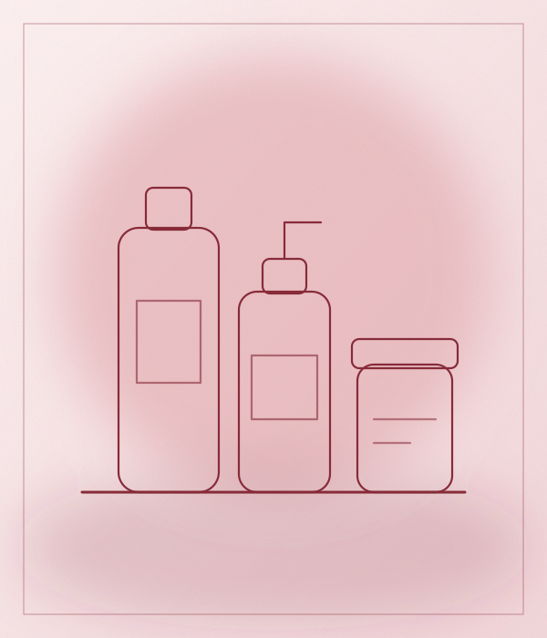
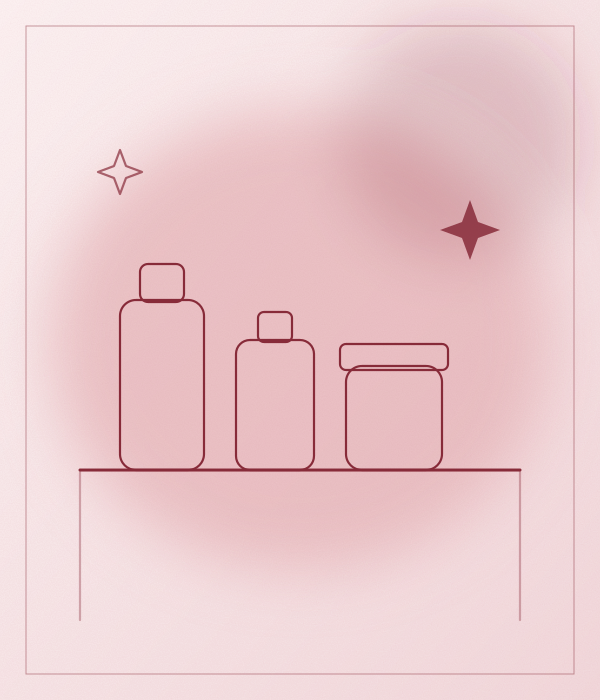

Cabello liso, suave y fácil de peinar con técnicas de laceado.
Vanlé Salón San Miguel es un salón en San Miguel, con 4.1 de puntaje y 368 reseñas en Google. Ofrece laceados, tratamientos capilares, color y balayage y venta de productos. Reserva tu cita y ven a conocernos.
Calificación basada en 368 reseñas de clientes en Google Maps.
Agenda tu cita por WhatsApp en pocos minutos.
Av. de la Marina 1487. Fácil de encontrar.


Cabello liso, suave y fácil de peinar con técnicas de laceado.


Hidratación y cuidado para devolver brillo y cuerpo al cabello.


Color, mechas y balayage con degradados a tu medida.


Productos para cuidar tu cabello en casa.
Ilustraciones referenciales.
Envíanos un mensaje por WhatsApp.
Dinos el servicio que quieres y cuándo te viene mejor.
Te esperamos en Av. de la Marina 1487, San Miguel.
Av. de la Marina 1487, San Miguel, Lima.
Escríbenos por WhatsApp al +51 970 964 522.
Laceados, Tratamientos capilares, Color y balayage y Venta de productos.
368 reseñas en Google Maps